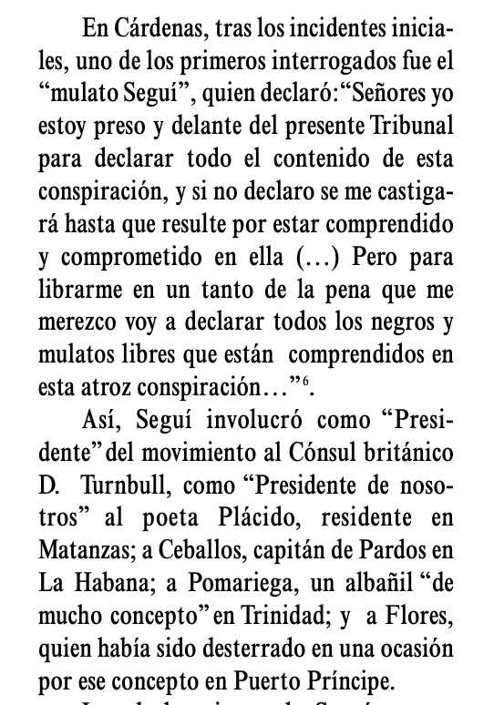
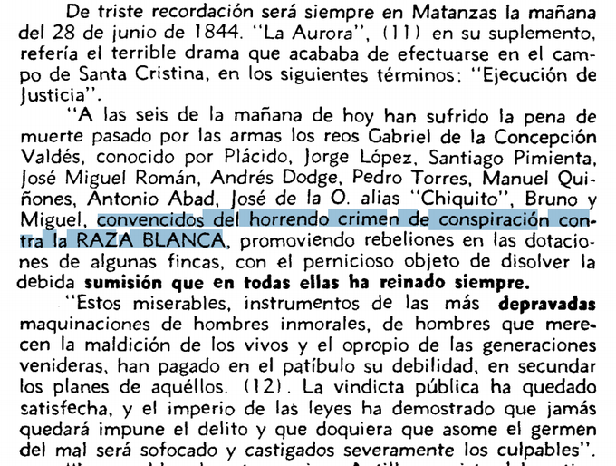
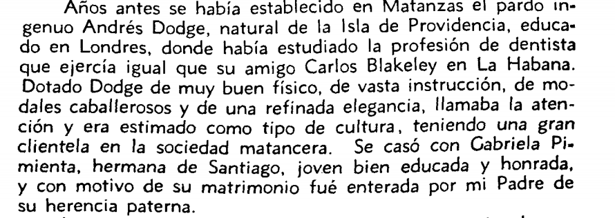

Los Hilos de Monik
La Conspiración de la Escalera
Publicado el 8 de noviembre de 2020 - 18 tweets - Hilo original en Twitter
1
En 1844 fue violentamente reprimida en Matanzas la llamada Conspiración de la Escalera.
+300 personas torturadas, 78 condenados a muerte, y un millar entre presos y desterrados.
Al parecer, la conspiración no existió: la única prueba fueron confesiones obtenidas bajo tortura
2
Un poco de contexto: en la 1ra mitad del S-XIX, Matanzas era una de las zonas económicas más importantes de Cuba.
Los esclavos representaban el 43% de la población del Occidente del país, con plantaciones que tenían dotaciones de entre 200-400 esclavos cada una.
3
En el año 1843 hubo una sucesión de rebeliones bien organizadas: en los ingenios Alcancía, La Luisa, La Trinidad, Las Nieves, La Aurora, el cafetal Moscú y el potrero Ranchuelo.
También se amotinaron los esclavos que construían el ferrocarril de Cárdenas a Bemba.
4
La más grande fue las de los ingenios Triunvirato y Ácana, que se extendió cuando los esclavos invadieron los ingenios La Concepción, San Miguel, San Lorenzo y San Rafael.
Testimonios de la época refieren que los alzados gritaban "¡Muerte, fuego y libertad!""
5
Cuando los esclavos se dirigían al poblado de Santa Ana, fueron abatidos por una columna de 300 jinetes del regimiento Lanceros del Rey. Sobre los campos quedaron 50 cadáveres y se hicieron 200 prisioneros.
Es en este contexto que se da la Conspiración de la Escalera.
6
A finales de 1843, el hacendado Esteban Santa Cruz Oviedo, propietario del ingenio Santísima Trinidad, informó a las autoridades que su esclava Polonia supo de un plan de alzamiento que tendría lugar en enero de 1844.
La esclava fue recompensada con la libertad y 500 pesos
7
Bajo la supervisión del Capitán General Leopoldo O’Donnell, se comisionó al coronel de milicias de Matanzas Francisco Hernández y al propio hacendado Esteban Santa Cruz de Oviedo, para encontrar a los conspiradores.
8
El método empleado consistió en amarrar a los sospechosos a una escalera y azotarlos hasta que confesaran o perecieran. De ahí el nombre de Conspiración de la Escalera.
Muchos torturados murieron sin revelar conocimiento del complot, pero las confesiones llovieron.
9
Si de inicio el esclavo no se declaraba culpable y denunciaba a otros, era atado y azotado. Si sobrevivía era transportado a la enfermería.
Los que morían eran declarados como fallecidos por diarrea. En Cárdenas, los cuerpos de los fallecidos se arrojaban a la bahía.
10
La mayoría de las confesiones fueron similares. Los esclavos decían se les había prometido la libertad, que serían dueños de las haciendas de sus amos y se casarían con las blancas.
Esto refleja, más que el contenido de un plan de conspiración, la pesadilla de los hacendados
11
Según la Comisión Militar de Matanzas estuvieron involucradas unas 4 mil personas: 96 blancos, 783 esclavos y 2 187 de "color libres".
78 condenados a muerte, 600 a presidio y unos 400 expulsados de la Isla. Durante los interrogatorios murieron unos 300 negros y mestizos.
12
Entre los 96 blancos investigados o juzgados estuvieron Domingo del Monte y José de la Luz y Caballero, así como el abolicionista colombiano Félix Tanco Bosmeniel.
¿Por qué el 71,09% de los condenados eran libres “de color” y sólo el 10% esclavos de plantaciones?
13
Más allá de confesiones obtenidas bajo tortura, nunca se probó la existencia de tal conspiración.
Muchos historiadores coinciden en que las autoridades españolas usaron la denuncia como una excusa para quitar del camino a blancos abolicionistas y negros adinerados.
14
Con el pretexto de la conspiración, desaparecieron los Batallones de Pardos y Morenos. Poetas, escritores, periodistas, artistas, educadores, enfermeros y dentistas negros estaban vinculados a esta organización.
A 1844 se le conoció como "el año del cuero".
15
Todo hombre libre de color nacido extranjero recibió 15 días para abandonar el país. Incluso a cubanos no se les permitió regresar.
Quienes poseían algunos bienes y se salvaron, quedaron arruinados. Las esposas e hijas de muchos de los presos hubieron de prostituirse.
16
El fusilamiento del poeta Gabriel de la Concepción (Plácido), el propietario de tierras Santiago Pimienta, el dentista Andrés José Dodge, el pintor Jorge López y los músicos José Miguel Román y Pedro Torre, fue una clara señal de intolerancia a la naciente burguesía negra.
17
Aunque probablemente la víctima más famosa de la Conspiración de la escalera fue Plácido, quiero terminar este hilo compartiendo la memoria de Angel Cesar Pinto sobre uno de los condenados a muerte y amigo de su familia: el dentista Andrés Dodge.

18
Algunos textos consultados:
- La falsa Conspiración de la Escalera
- ¿Conspiración esclava o manipulación esclavista?
- Los momentos que preceden al la "Conspiración de La Escalera" en la Jurisdicción Matanzas. La población negra de la zona (1840-1844)
- La Conspiración de la Escalera: el precio de una traición
- The Year of the Lash: Free People of Color in Cuba and the Nineteenth-Century Atlantic World